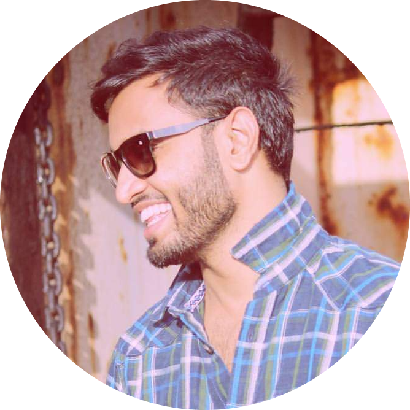

|  |
Basit Sayeed ToleSports Event Specialist. Digital Marketer and a Web Developer. |
Highly skilled professional Qualified Master’s Degree in Sports Business Management from D.Y. Patil University, Thane; with 6+ years of experience across Venue Management, Operations Management, Broadcast
Liaison, Logistics Management.
Proficient in developing action plans for optimizing cost of the events, formulating budgets, negotiating suitable venues or locations as per the requirements and constraints
Diligent in designing processes, facilitating a collaborative teamwork, providing arrangements for venue, events, conferences, meetings and ensuring the best in class support co-ordination
Adept at creating & distributing daily and weekly schedules - identifying tasks with key deadlines and willingness to reshuffle as priorities change/ opportunities arise
Effective organizer, negotiator, team player possess strong communication & analytical ability and capability to perform under stress and strenuous conditions; excellent analytical, problem solving and
interpersonal skills.
| Date | Role and Organization |
|---|---|
| Nov 2021 | Tournament Logistics Manager, T10 Abu Dhabi Cricket League. |
| Feb 2020-Sep 2021 | Project Manager, Top Events Organization. |
| Aug 2019-Dec 2019 | Deputy Manager, Qatar Olympic Committee. |
| Sep 2018-March 2019 | Venue Media Manager, Accreditation Manager and Broadcast Liaison, Mumbai City Football Club, Indian Super League. |
| April 2018-May 2018 | Concession Manager, Indian Premier League. |
| Nov 2017 - March 2017 | Venue Media Manager and Broadcast Liaison, Mumbai City Football Club, Indian Super League. |
| Sep 2017 - Oct 2017 | Venue Press Asssitant, All India Football Federation, FIFA U-17 World Cup India. |
| Project Management | ⭐⭐⭐⭐⭐ |
| Web Development | ⭐⭐⭐⭐ |
| Digital Marketing | ⭐⭐⭐⭐ |
| Microsoft Office | ⭐⭐⭐⭐ |
{kind=link}
.png?width=450&height=278&crop=fill){kind=link}